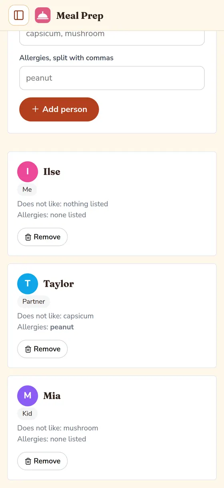
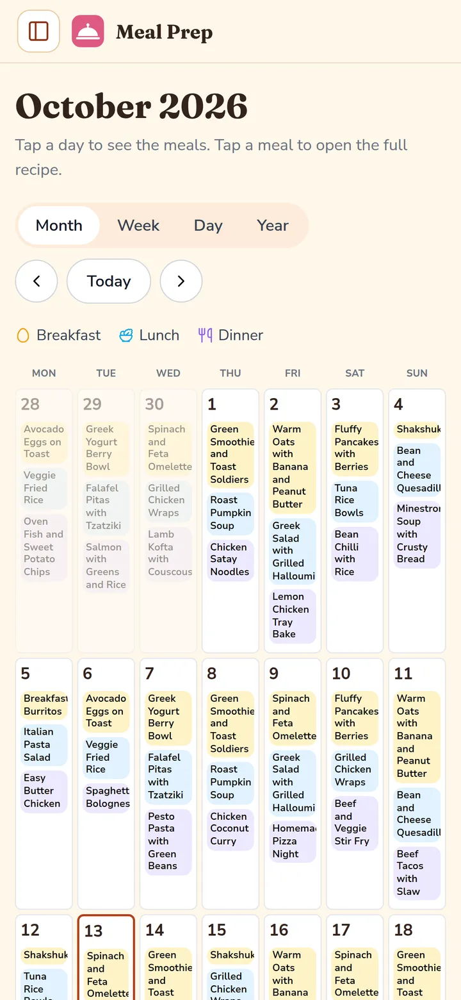
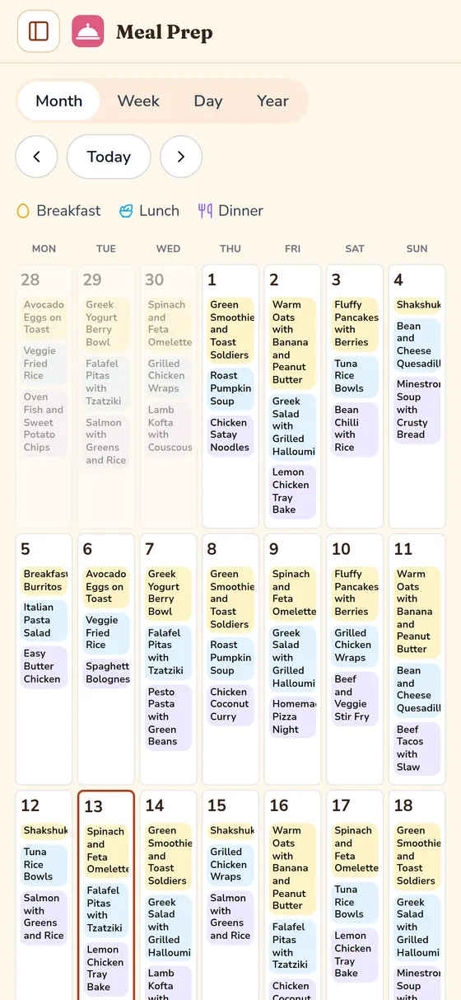
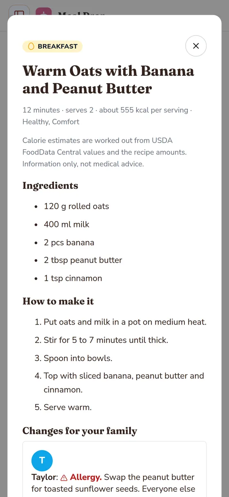
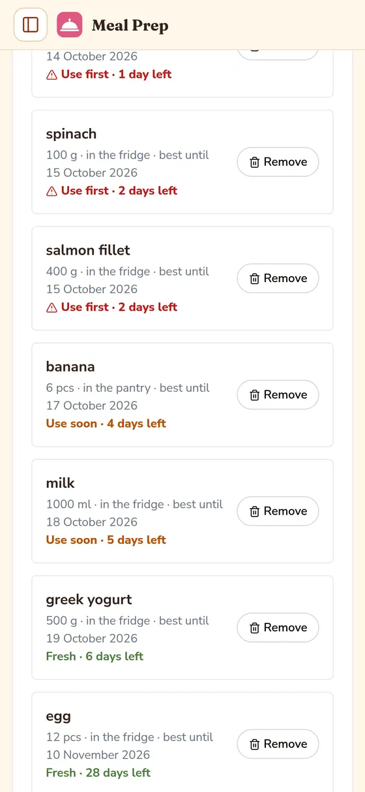
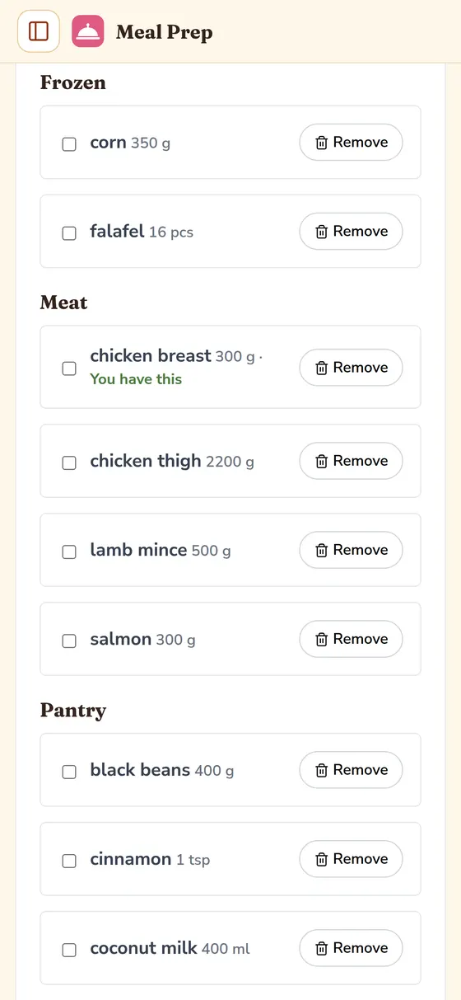
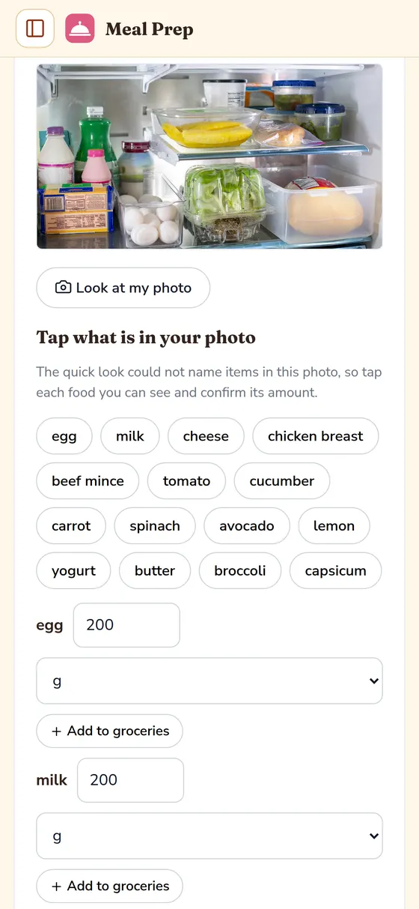
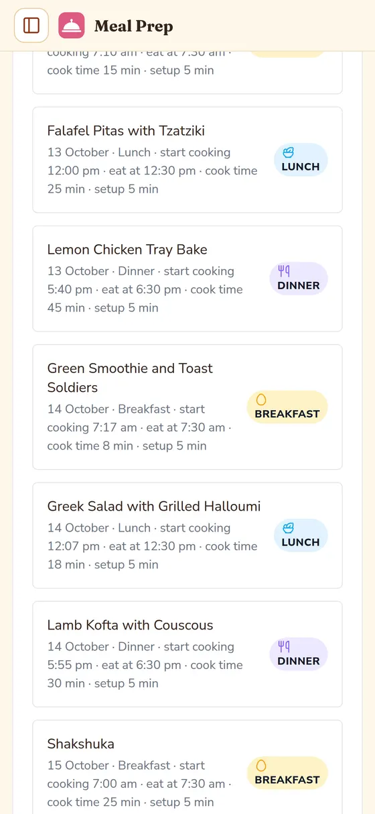
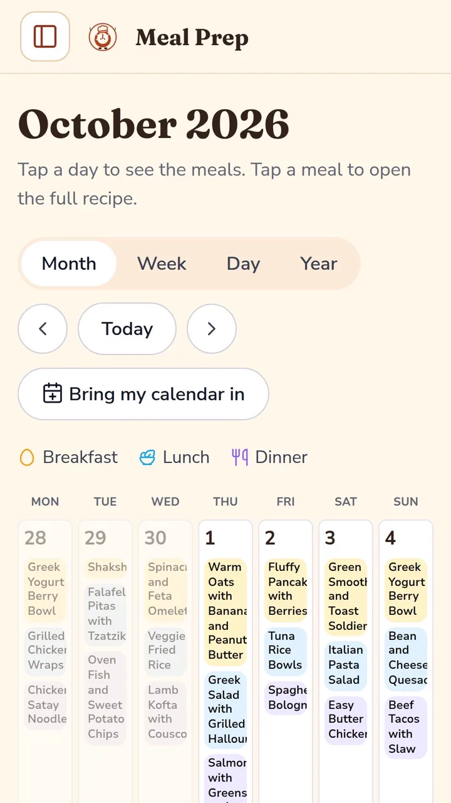

Add your family
Names, dislikes and allergies for each person, added once.

Meal planning app
Meal Prep plans breakfasts, lunches and dinners for your whole family, then writes the grocery list from your plan.
Free · No card

Every weeknight, the same three small problems show up:
Meal Prep settles all three before the week starts. The plan sits on one colour coded calendar, the grocery list writes itself from that plan, and food that expires soon gets planned first.
Three steps, once a week. That is the whole system.
Names, dislikes and allergies for each person, added once.

Fill the calendar meal by meal, or let the planner pick for you.

The grocery list builds itself from the plan, grouped and with amounts.

Free · No card
The jobs families actually hire a meal planner to do.
Add each person’s dislikes and allergies once. Every recipe then shows the swap for that person, right on the recipe, while everyone else eats the normal meal.
Worried about allergies? Allergen warnings and per person swaps are free in every plan, forever. Safety is never a paid extra.

Groceries carry best until dates, shown expiring first. The planner reaches for food that is about to run out, so less of the weekly shop ends up in the bin.
Australian households throw out over A$1,500 of food a year on average (OzHarvest).Worried about cost? The app is free today, and it starts with the food already in your kitchen.

Your plan for the next 7 days becomes one grouped list with amounts worked out. One shop covers the week, and nothing gets bought twice.
No time for another system? The list builds itself from the plan. There is nothing extra to type, copy or keep up to date.

Point the camera at your fridge and Meal Prep suggests what you have, ready to plan with. You confirm every item before it is saved.
Worried about your data? The photo is read on your device and never uploaded. There is no account, no ads and no tracking. Everything stays on your device.

Set your eating times once. Meal Prep works out when cooking needs to start, recipe time plus your setup minutes, and reminds you at that moment.
Worried you will forget? The reminder is worked out for every meal on the plan, so dinner stays on track on busy days too.

Free · No card
Meal Prep is new, so there are no reviews or ratings to wave at you yet. What we can show you is the app itself, working, and the real numbers behind why it exists.

Captions on the video describe what is on screen.
2.5 million tonnes
of food is wasted by Australian homes every year, and 70 percent of it is edible.
Source: OzHarvest, Half Eaten Report 2025
Over A$1,500 a year
of food is thrown out by the average Australian household, every year.
Source: OzHarvest, Half Eaten Report 2025
About A$245 a week
is what the average Australian family of four spends on groceries.
Source: Canstar survey, reported September 2026
When real reviews and ratings exist, they will be published here, exactly as they are.
What it costs, in plain numbers. No fine print, no surprises later.
Free for everyone
Every feature, for every user. No card, no account, nothing to cancel.
Plus: A$6.99 a month, or A$49.99 a year
When paid plans arrive, your first month is still free in full, with no card asked up front. Planned pricing, not on sale yet.
Family: A$9.99 a month, or A$79.99 a year
Sold only once its extras are built: shared planning across devices, a printed week sheet for the fridge door, and plan sharing with family.
Allergy swaps and allergen warnings stay free in every plan, forever. Safety information is never a paid extra. All prices are in Australian dollars.
Nothing today. Meal Prep is free for everyone while it launches. When paid plans arrive, your first month is still free in full, with no card asked up front. After that, a free core plan stays free forever, and Plus is planned at A$6.99 a month or A$49.99 a year.
No. There is no sign up and nothing to log in to. Your family, your plans and your groceries are saved on your own device, and nowhere else. Nothing you enter is uploaded, sold or used for ads. You can download a copy of your data at any time from the app.
No, and the app never pretends they are. Recipe numbers are estimates worked out from USDA FoodData Central values and the amounts in the recipe, shown as a rounded about figure for each serving. Treat them as a rough guide only. They are information, not medical advice.
Yes. Add each person’s allergies and dislikes once, on their family profile. Every recipe then shows what changes for that person, with a clear swap, while everyone else eats the normal meal. Allergen warnings and swaps are free in every plan, forever, because safety is not a paid extra.
Yes, easily, because there is only one copy and it lives on your device. Remove the app and its saved data and everything is gone. Nothing sits on a server waiting to be chased up. If you want a keepsake first, download your data from the app before you delete.
Probably, yes. Mealime, the planner many families used, closes on 21 October 2026, and it offers no way to export your plans, so nothing moves across on its own. Meal Prep starts you fresh instead: add your family, tap the days, and your first week is planned in minutes.
Email hello@ilseplacencia.shop and a real person will reply. Meal Prep is made by Ilse Placencia, an independent maker in Australia. There is no call centre and no ticket maze, just an inbox that gets read. Support hours are not fixed, so please allow a couple of days.
Open Meal Prep, add your family, and tap your first day.
Open the appFree · No card